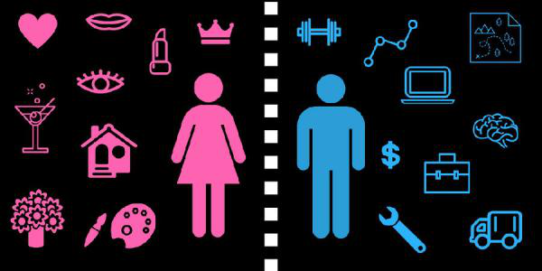
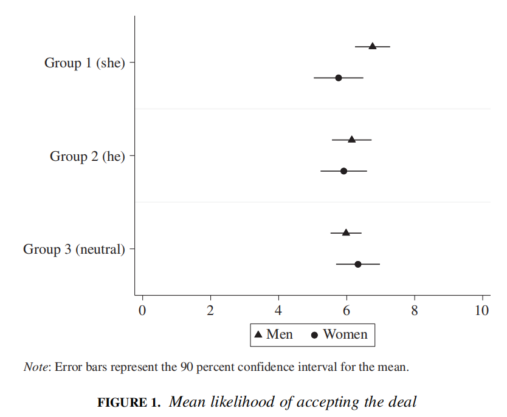
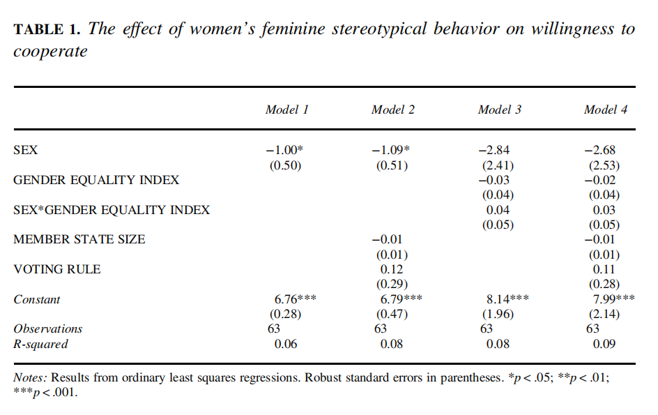
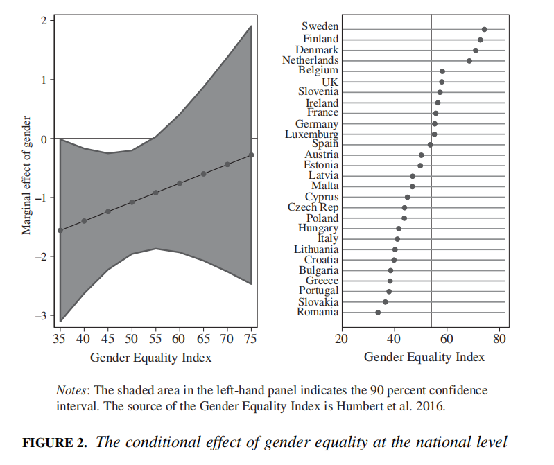

收录于合集

作品简介
【作者】 Daniel Naurin，瑞典哥德堡大学政治学教授，主要研究兴趣是欧盟政治、透明治理和游说。
Elin Naurin，瑞典哥德堡大学政治科学系研究员，她的研究和教学集中在代议制民主理论和实践。
Amy Alexander，瑞典哥德堡大学政治学副教授，研究方向为性别研究。
【编译】 赵怡雯（国政学人编译员，山东大学国际政治专业本科生）
【校对】 刘潇昱
【审核】 杨紫茵
【排版】 王欣月
【美编 】聂涵琳
【来源】 Naurin, D., Naurin, E., & Alexander, A. (2019). Gender Stereotyping and Chivalry in International Negotiations: A Survey Experiment in the Council of the European Union. International Organization, 73 (2), 469-488.
期刊简介
International Organization（《国际组织》），简称“IO”，是一份经过同行评议的季刊，涵盖国际事务的领域包括：外交政策、国际关系、国际与比较政治经济学、安全政策、环境争端与解决、欧洲一体化、联盟模式与战争、谈判与冲突解决、经济发展与调整、国际资本流动等。它成立于1947年，由剑桥大学出版社代表国际组织基金会出版，主编是乔治城大学的Erik Voeten。根据Journal Citation Reports显示，2019年其影响因子为5，在95种国际关系期刊中排名第2。
国际谈判中的性别刻板印象和骑士精神：欧盟理事会的调查实验
Gender Stereotyping and Chivalry in International Negotiations: A Survey Experiment in the Council of the European Union
Daniel Naurin
Elin Naurin
Amy Alexander
内容提要
对个人特征和能力的既定期望形成的性别刻板印象可能会影响外交官的行为和国际谈判的进程。对欧盟理事会的一项调查实验发现，女性谈判者典型的性别行为可能引发男性谈判者的骑士精神，且骑士精神的反应主要表现在男女平等程度较低国家的外交官身上。此研究有助于研究国际关系中的非规范行为，特别是外交中情感的表达与接受。基于性别的直觉认知过程，长期存在于国际谈判以及国际关系中的性别刻板印象可能形成调节效应。
文章导读
在国际关系和政治科学理论中，通常认为外交和国家间谈判是由物质条件、权力不对等、制度规则、社会规范和谈判者个人能力等因素驱动的。 作者认为国际谈判者寻求合作的解决方案的意愿可能受到他们对自身和谈判对方的性别认知影响。 性别刻板印象是以性别为基础的根据个体特征和能力而形成的既定期待，而它可能会影响外交人员的行为以及国际谈判的进程。一项对欧盟理事会的调查实验发现，女性代表表现出的脆弱性可能会引起男性代表的骑士精神，且这一反应更多体现在来自男女较不平等国家的外交人员身上。
传统的性别认知，总是将男性与竞争性的分配谈判、女性与合作谈判相联系。在谈判中，性别刻板印象往往把一个有效的谈判者与所谓的男性特征联系起来，即强势、支配、自信和理性，而一个无效的谈判者则与假定的女性特征相联系，即软弱、顺从、妥协和情绪化。然而，会暴露性别刻板印象的行为可能会导致相反的反应。基于社会心理学的研究，作者发现 对女性的性别刻板印象可能产生两种影响，即男性的骑士精神和女性的抗拒心理 。当男性认为有义务补偿谈判中无效的较差的女性对手时就会激发出骑士精神，而当女性意识到并承认刻板印象对她们的有效行动能力存在潜在破坏的可能时，就会产生对刻板印象的抗拒。在两种机制的共同作用下，男性和女性谈判者的行为差异逆转，符合刻板印象的描述：男性的工作效率更高，女性的合作能力和人际关系则更差。
男性的骑士精神反应对女性谈判者而言是一把双刃剑。 一方面，它助长了谈判中女性软弱、情绪化的形象；另一方面，男性掉进“骑士精神的陷阱”，给女性提供超范围的补偿性待遇。本文重点探究了性别刻板印象对谈判者的看法和行动可能产生的中间效应。
01
**
**
性别刻板印象和国际谈判
虽然国际关系中的性别研究取得了显著的进展，但鲜少有将性别理论应用于国际谈判的研究。一方面，传统对国家间谈判的研究主要在理性选择的框架内进行，其参数由国内和国际层面的物质和政治条件以及相互依赖的模式设定。在这个框架下谈判者个体仅有有限的发挥空间。另一方面，建构主义在对国际谈判的研究中强调谈判者之间的规范、说服和社会互动的作用，外交人员对物质和政治条件的认知可通过社会化和交往行为改变，但建构主义假设谈判者是在卡尼曼的理性认知（系统2）框架内进行谈判行为。本文提出的关于性别刻板印象在国际社会中如何发挥作用的理论论点与这两种传统观点都有所不同。
作者采用卡纳曼的第一认知系统来理解性别刻板印象的作用，即外交官用更为直观的认知做决定。而外交官的性别意识越强，认知反应就越强。 男性和女性谈判者会通过各自的刻板印象感知各类情感和理性的表达和信号，这反过来可能会影响他们的谈判行为。而对行为的影响将在何种程度上转化为谈判结果，将取决于特定谈判中一系列的其他因素。因此， 作者的论证和实证研究局限于合作谈判行为的层面 。
02
性别刻板印象与谈判的联系
基于过往关于谈判的文献研究，作者发现，性别刻板印象可能会影响谈判者对谈判对象的期望和反应，并最终影响他们在谈判中的表现。强势且自信的男性特征与有效的谈判技巧关联，而软弱且情绪化的女性特征对谈判则是无效的。

虽然国际关系观察员强调女性刻板印象能够为谈判创造积极价值，包括对双方进行合作和良好关系的意愿以及表达情感和同理心的能力。但大量文献表明在谈判中男性较之于女性能够获得更好的结果，性别刻板印象是理解男性优势地位的关键。
社会心理学研究表明，在某些情况下，在性别刻板印象下暴露的行为可能会导致与社会固定思维相反的反应。由于性别刻板印象往往使女性在谈判中处于不利地位，女性谈判者可能会对女性典型行为作出负面反应，做出与刻板印象设定相反的行为，从而产生对刻板印象的抗拒。但同时女性可能会从男性更加宽容的态度中获得优势。
许多研究发现，男性在受到性别刻板印象的刺激时会表现得更好。一方面，性别刻板印象给予男性的谈判能力更积极的评价，进而提高了他们的表现；另一方面，男性可能在面对女性谈判对手时表现出骑士精神，即当女性面对性别刻板印象产生抵触心理时，男性会表现出更加随和的态度，提供补偿性待遇，进而提高了合作程度。
尽管通常情况下认为性别刻板印象会加强性别作用，但女性对性别刻板印象的反应可能会在事实上逆转男性和女性的行为。 作者认为女性的抗拒反应和男性的骑士精神可能会导致女性比男性更不愿妥协。作者以欧盟外交官为样本设计了以下实验，以测试两个进程是否导致：男性变得更愿意合作而女性变得更不愿意合作。
** H1：** 女性谈判者表现出的女性刻板行为会使男性更愿意接受合作交易，产生男性的骑士效应。
** H2：** 女性谈判者表现出的女性刻板行为会使女性更不愿意接受合作交易，产生女性刻板印象抗拒效应。
作者认为性别刻板印象是社会根据个体的性别对其性格特征和适当的角色所构建的信念，人们的认同程度各有不同。性别刻板印象通过社会化形成性别信仰体系。在国际谈判中外交官来自不同国家，不同国家的性别信仰体系不同，因而作者预判在性别刻板印象更强的国家，谈判者的反应更大。因此提出假设3，样本中的欧盟各成员国对性别平等的支持和实现程度差别较大：
_ H3： 性别角色社会化程度较强的国家代表对刻板行为的反应强于性别角色社会化程度较弱的国家代表。_
**
**
03
研究设计
实证案例研究在欧盟理事会中进行，所有欧盟的立法均需通过理事会的批准，且大多数对理事会决策的研究使用的模型是基于理性选择假设的。理事会的谈判者被认为体现的是国家特定部门、政党政治或官僚利益的偏好。一些更具建构主义取向的研究强调了社会化的作用和在迭代交互过程中可能产生的共同群体规范，但这些研究并未考虑性别因素的作用。
调查实验在理事会的审议机构中进行，受访者是驻布鲁塞尔的来自各国的职业外交官。受访者将在一个设定的场景中被提问是否愿意支持虚构的合作伙伴所支持的特定政策建议，作为交换，对方承诺在未来某个场合给予受访者支持。这种合作性的讨价还价，即一方同意投票支持另一方的优先立场，以换取对方在不同问题上的相互支持，是理事会谈判的一个共同特点。在我们的设定中，互惠并不以具体的形式详细说明，而是以IOU（我欠你）的形式呈现。
调查实验
实验的对象是理事会委员会和工作组的共308名外交官，来自外交和安全政策、经济政策、环境政策等广泛领域的谈判人员，具体调查形式是电话采访和收集问卷。
处在某个场景中的受访者随机面临三种不同的情况（同一组的受访者分男性与女性）：第一组，谈判对方为女性且使用典型的女性行为进行合作谈判；第二组，谈判对方为男性但使用典型的女性行为进行合作谈判；第三组，谈判对方不分性别且在谈判中没有典型的性别行为。如果组1存在性别差异，而在组2和组3中不存在，那么就能够证明性别刻板印象在发挥作用。作者预测组2不存在性别差异，即当谈判对方为男性时男性骑士精神和女性抗拒反应并不发挥作用。如果组3不存在性别差异，那么就能证明组1的性别差异是由先天产生的性别刻板印象造成的。
04
实验结论

图1.接受交易的可能性平均值
图1展现了按性别划分的三组的不同实验结果。当女性在谈判中表现出刻板行为时，男性明显比女性更愿意接受女性谈判者提出的交易。组1中对女性刻板行为作出“接受”反应的男性平均值（6.76）比同组女性平均值（5.76）大一个刻度点。组2中男性表现出典型的女性行为时，男女无明显差别。组3中完全不存在典型的女性行为时，男女无显著差异。这一结果支持了组1中的性别差异确由场景中的性别刻板印象引起的这一结论。
前文提出造成组1差异的是两种机制，即男性骑士精神（假设1）和女性抗拒反应（假设2）。为评估两种机制的作用，可参考两个相关比较：首先，组1（均值为6.76）和组3（均值为5.98）的男性之间存在适度但较显著的差异，这与假设1一致；其次，并未找到假设2的可信支持。组1与组2的女性均值之间的差距有半个刻度点，与男性相比，差距是相反方向的。但由于差距并不显著，所以只能得出女性在面对女性刻板行为时变得合作意愿降低，而不能说变得不愿意合作。
社会化对性别信仰体系的调节作用
第三个假设提出性别刻板印象的影响在性别规范方面受到谈判者的民族文化背景的调节。性别刻板印象是社会化过程的产物，在不同的文化背景下也有所不同。本文假设更强的性别角色社会化使外交官更有可能在性别刻板印象的视角下解释对方的谈判行为。
为验证这一假设，对第一组的受访者进行了多元回归分析。在模型中加入一个交互变量，该变量与受访者的性别及其国家的性别平等指数（Gender Equality Index）有关。性别角色的社会化是难以衡量的，但这一指标是专为欧盟成员国的性别平等状况制定的有用的指标。该指标反映了男性女性在工作、财政资源、获得知识权力等方面的差异。
表1.女性性别刻板行为对合作意愿的影响

该模型还包括两个已被证实会对欧盟外交官从事合作谈判行为的倾向有影响的控制变量（control variables）：成员国规模和投票规则。表1显示了实验结果，其中模型1与2证实了之前的研究结果，即使加入控制成员国权力不对称和委员会投票规则这两个因素时，性别差异依然约为一个尺度点。模型3和模型4包括与性别平等指数的交互作用。虽然交互作用项本身不显著，但适当的检验应是绘制不同性别平等水平下性别的边际效应。

图2.国家层面上的性别平等条件的效应
图2可证实在评估性别刻板印象效应时，需考虑国家社会文化背景。基于模型4的数据，我们发现，当组1的女性谈判者表现出典型的女性行为时，仅在性别平等指数在54左右时，组1中发现的性别差异才具有统计意义，因此也无法确定在性别平等程度较高的国家性别刻板印象发挥的影响。图2右侧图表可以看到各个欧盟国家的性别平等指数。
05
结论
国家间谈判是解决国际冲突和达成合作协议的主要手段。谈判者寻求合作解决争端的意愿对于解决冲突和实现互利的国际条约至关重要。本文的实证研究虽未研究性别刻板印象与影响国际谈判其他因素的相对比重，但 展现了将男性特征和女性特征行为的观念建构纳入国际谈判研究的必要性 。
本实验发现了一个指向非直觉的悖论。不同于传统性别刻板印象的思维，通过利用性别刻板印象，女性谈判者实际上可能扭转男性的谈判行为，使男性产生骑士风度。这表明性别刻板印象和基于这种刻板印象的战略或非战略行动可能会影响国际谈判者的行为。但由于实验条件所限，且实验指标的效应大小是相对的，因此仍有待完善。
传统观点认为女性在谈判中更倾向于合作，强调妇女在预防和解决冲突并建立和平方面的重要作用。但由于外交官来自性别信仰体系不同的国家，性别的社会化角色不同，在谈判中会展现出不同的倾向。 因此，作者认为如果国内支持这种刻板印象的规范和行为没有改善，那么参与外交和国际事务的女性人数的增加可能不会消除性别刻板印象。
本文的研究虽只涉及性别刻板印象中女性刻板行为，且只关注国际谈判这一领域。但表明了国际关系学者关注性别在国际谈判中的重要作用， 在国际谈判中占主导地位的理性选择观点可能忽视了社会动态对国际谈判的影响 。
本文的发现说明了非规范行为、情绪和直觉认知在国际关系中的重要作用。首先此实验证明了，精英谈判者之间存在具有性别刻板印象的谈判关系；其次，让我们了解了谈判中男性的一种反应机制——骑士精神，并探究了其产生的社会文化背景条件。
对于参与国际事务的女性，性别刻板印象或许是一把双刃剑，女性谈判者有可能利用男性骑士精神的战略机会，获得更大程度的谈判进展。但同时也可能强化女性软弱、情绪化的特征，使女性在国际谈判及国际事务中处于不利地位。而女性是否会故意表现出这样的复杂特殊行为则超出本文的研究范围。
文章观点不代表本平台观点，本平台评译分享的文章均出于专业学习之用, 不以任何盈利为目的，内容主要呈现对原文的介绍，原文内容请通过各高校购买的数据库自行下载。
**
**
**
**
**
**
添加 “国小政”微信
获取最新资讯


国政学人
支持学术公益与知识传播
微信扫一扫赞赏作者 __赞赏
已喜欢，对作者说句悄悄话
取消 __
发送给作者
发送
最多40字，当前共字
上一页 1/3 下一页
长按二维码向我转账
支持学术公益与知识传播
受苹果公司新规定影响，微信 iOS 版的赞赏功能被关闭，可通过二维码转账支持公众号。